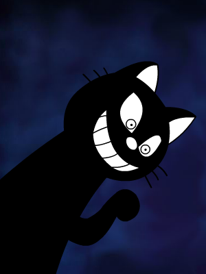

<div class="content">
	<a title="狸猫"></a>
	<p>喵星人的形象在狸星人眼中是外星异形，尤其是狸猫的形象最为恐怖。</p>
	<br />
</div>

{% include header.html param="转载阅读" %}

<div class="content">
<ol>
  <li>维基百科 - 恐怖谷理论<a href="http://zh.wikipedia.org/zh/%E6%81%90%E6%80%96%E8%B0%B7%E7%90%86%E8%AE%BA">↗</a></li>
	<li>喵嗚！人家才不是狸貓 by 瘋狂島<a href="http://maddishisland.pixnet.net/blog/post/166182351-%E5%96%B5%E5%97%9A%EF%BC%81%E4%BA%BA%E5%AE%B6%E6%89%8D%E4%B8%8D%E6%98%AF%E7%8B%B8%E8%B2%93">↗</a></li>
</ol>
</div>
